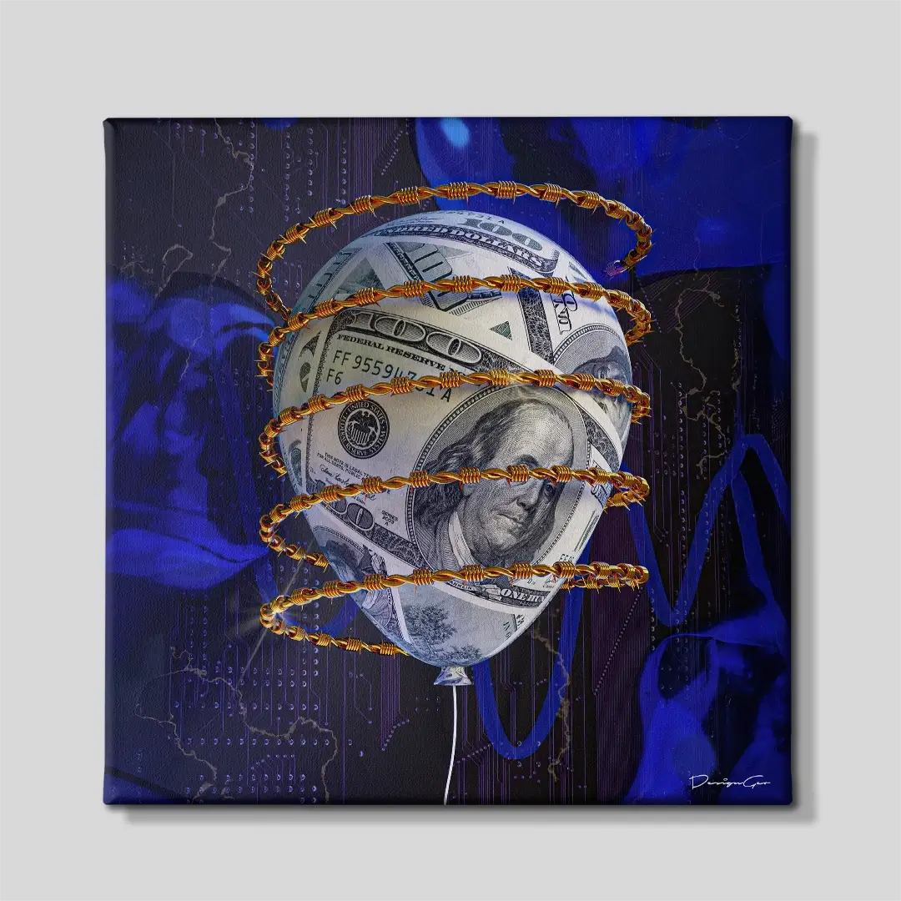
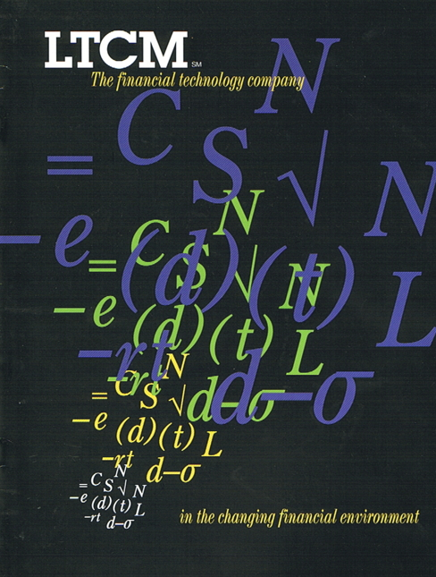
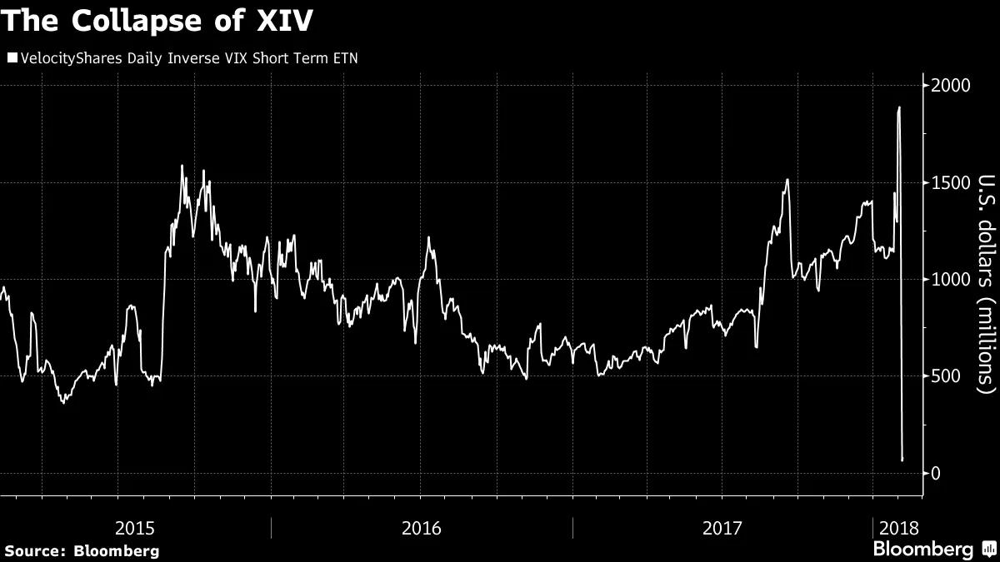

Volatility measures how much prices move. Risk determines whether you survive the move.
The two are related, but not the same.
What Volatility Actually Is
Volatility is dispersion. It tells you how far prices deviate from a reference point over a given period.
This works under one assumption: that deviations are temporary. Prices move away, then come back. Losses are statistical. Time smooths them out.
Under that view, risk is something you experience. Not something that ends your participation.
That distinction is the entire point.

Where It Breaks
An asset drops from 100 to 80 and later returns to 100.
The same drop forces someone else to liquidate at 80.
Volatility sees two identical paths. One participant survived. The other was removed from the game.
The difference has nothing to do with dispersion. It has everything to do with constraint.
Funds face redemptions, banks face capital requirements, and traders face margin calls. Positions get unwound not because the thesis is wrong, but because the structure holding the position cannot sustain the drawdown.
LTCM’s trades were right in the long run. The fund simply could not survive long enough to see that outcome. The constraint was funding, not expected value.

Risk Is the Loss of Optionality
Risk is not uncertainty. Uncertainty is a condition. Risk is the possibility that you are forced to act under that condition.
A more precise framing: risk is the interaction between price movement and constraint. When that interaction forces liquidation, the path forward no longer matters. The outcome is locked in.
This is why position sizing matters more than forecast precision. Why liquidity matters more than valuation at the point of stress. Why strategies fail not because they are wrong, but because they cannot be held long enough.
Short Volatility Makes This Visible
In calm conditions, selling volatility produces steady returns. The distribution looks favourable and risk metrics look clean.
Then the environment shifts.
February 2018. XIV blows up in a single session. The VIX spikes, inverse vol products enter forced liquidation, and the unwind feeds on itself. The losses were not proportional to the move. They were a function of the structure collapsing: margin requirements rising, liquidity thinning, and forced selling compressing into a window too narrow to absorb it.
This is what happens when constraints bind simultaneously. Losses accelerate at the exact moment the ability to hold declines. The position does not just lose money, it loses the ability to exist.

Standard Models Miss This
Most risk models approximate returns as normally distributed. Large deviations are treated as unlikely. Tails are thin.
Markets disagree. Extreme moves cluster. They appear precisely when liquidity is scarce and constraints are binding — the moments when participants are least able to absorb them.
The result is not just larger losses but also the replacement of discretion with liquidation.
The Maintained-System Problem
Volatility captures how unstable prices are.
It does not capture how fragile the system holding those positions might be.
That fragility sits in funding, leverage, liquidity, and behaviour under pressure. It is the maintenance cost of the position — the exergy required to keep the structure intact.
When that maintenance fails, the position does not gradually adjust. It collapses. Order does not erode smoothly. It decays in steps, and usually at the worst possible time.
Low volatility is not safety. It is a system that has not yet been tested.
And when it is tested, what matters is not how much prices move. It is whether the structure survives.